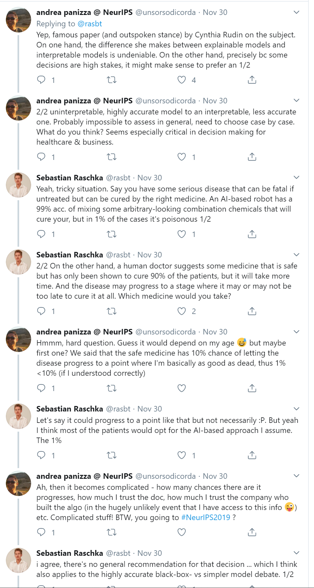
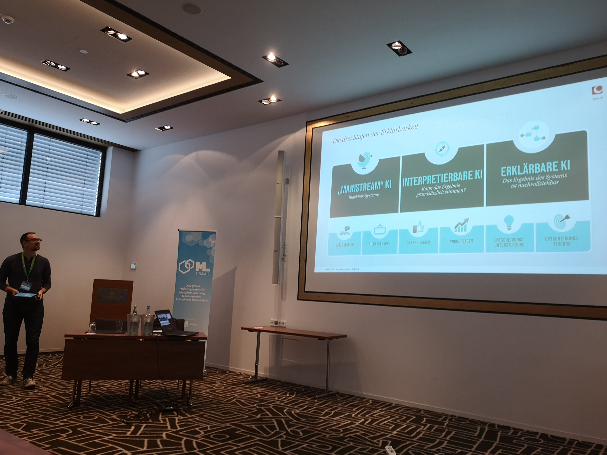

### Tree Besser Regularisieren How to Prune Decision Trees to Make the Most Out of Them https://towardsdatascience.com/how-to-prune-decision-trees-to-make-the-most-out-of-them-3733bd425072
Techniken 1. Surrogate Modell plus Introspektion 2. What If / Icicle Plots 3. Lime, Shap etc.
https://twitter.com/fishnets88/status/1310498494889766913 I am on my honeymoon now, so I'll delay properly chasing this, but the city of Amsterdam is sharing notes on how they deploy algorithms. They touch on topics of fairness/explainability too. An example on algorithms against illegal airbnb rentals: https://algoritmeregister.amsterdam.nl/en/holiday-rental-housing-fraud-risk/
[]Was heißt das eigentlich? Regeln? Wie viele? Wie genau? Widerspruch? []Neue Berufe die die Regeln auslegen und erklären? Rechtsanwalt? * Stabilität der Vorhersage
### Stop Explaining Black Box Machine Learning Models for High Stakes Decisions and Use Interpretable Models Instead https://arxiv.org/abs/1811.10154
### Allgemeiner Als Referenz Omaymaüîé (@OmaymaS_) tweeted at 10:14 PM on Thu, Dec 12, 2019: üë©‚ÄçüíºSnapshots of my slides on "Machine Learning Interpretability" with an overview of the relevant packages and cloud solutions. üëâ Full version on speakerdeck: https://t.co/YPqZKdyihQ #rstats #python #MachineLearning https://t.co/YjDU8gXsUv (https://twitter.com/OmaymaS_/status/1205234474872705024?s=03)
### Diskussion zu Artikel darüber https://twitter.com/rasbt/status/1200811980535353344 
### Allgemein ist die Systematik anders als bei MACH Interpretable > Explainable 
### Post pruning decision trees with cost complexity pruning https://scikit-learn.org/dev/auto_examples/tree/plot_cost_complexity_pruning.html
### Abstract Squaring Deep Neural Networks for interpretability - Decision Trees as Surrogate Model for Neural Networks Deep Neural Networks have outstanding performance and flexibility when learning from complex data sets. They can be regularized to generalize well on pretty much any data set. However, without additional work, they are black boxes and how they come to conclusions is not transparent or comprehensible. Exactly this right to explanation is well established by Europe's GDPR (https://en.wikipedia.org/wiki/General_Data_Protection_Regulation), United States' credit score (https://en.wikipedia.org/wiki/Right_to_explanation, https://en.wikipedia.org/wiki/Credit_score_in_the_United_States), and many other real world applications. On the opposite side, decision trees can be much more comprehensible, and can be trained either towards high understandability (simple tree) or high accuracy (complex tree). Unfortunately, unlike Neural Networks they tend to overfit when trained on real world data and are hard to regularize. In this contribution I will show how training decision trees on data generated by a neural network gives us a dial to be tuned between predictive power on one side and explainability on the other side.
## Surrogate Models ### Scaling down using a surrogate model https://colab.research.google.com/github/DJCordhose/ml-workshop/blob/master/notebooks/tf2/tf-surrogate-model.ipynb https://colab.research.google.com/github/DJCordhose/ml-workshop/blob/master/notebooks/tf2/tf-surrogate-model-details.ipynb http://bit.ly/scaling-down-2020